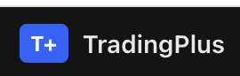

HQ entry (product)
High-quality entry cues on charts — marketed on the live product, mocked here.

This page is a tiny open demo: synthetic candles + Lightweight Charts. HQ markers and symbol switching illustrate the product feel — production engines, screener batches, and assistants stay on the hosted product.
Demo only. Prices are generated locally. For live markets, HQ entry, screener, Yunai/CH, and billing, use the hosted product.
High-quality entry cues on charts — marketed on the live product, mocked here.
Multi-market daily batch scans. Contact support for custom universes.
AI assistants for research Q&A — available after login on hosted sites.